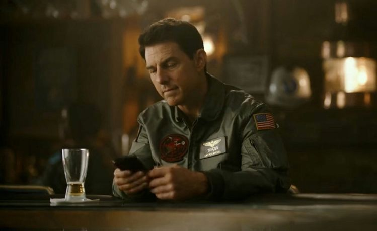
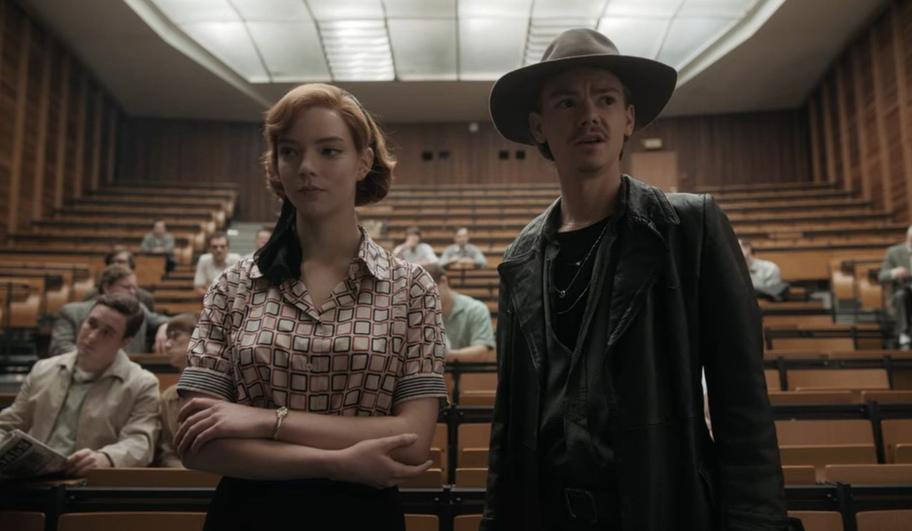

|  | "TOPGUN: MAVERICK" |
Got to watch this film at the cinemas. A very nostalgic feeling. I wasn’t into the historical vibes it gives off; however, it shows the possibility of the impossible. A very awe-inspiring, heartbreaking-in-a-way movie perhaps and made me want to try flying a plane (still too young so I’m left with dreaming) |
|  | "THE QUEEN'S GAMBIT" |
The series got me thinking how our brains actually work. With all that intelligence, behind came some struggles that our reality constantly deals with. The cinematography and harmony of the scenes to create a masterpiece shot. (I think Elizabeth is really pretty too!!!) |